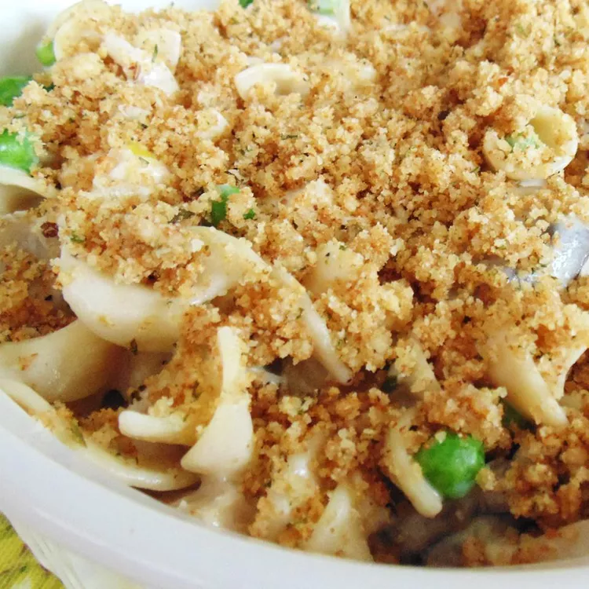

Home
Tettrazzini

Description
This baked turkey tetrazzini recipe is a delicious combination of leftover turkey, veggies, and noodles. I
usually double the topping ingredients.
Copied from Allrecipes Allrecipes Original
Ingredients
-
6 tablespoons unsalted butter, divided
-
2 stalks celery, thinly sliced
-
1 onion, choppedn
-
3 cups cubed cooked turkey
-
1 (8 ounce) package white mushrooms, sliced
-
3 tablespoons all-purpose flour
- etc ...
Steps
- Preheat the oven to 350 degrees F (175 degrees C). Grease a 9x13-inch baking dish.
- Melt 3 tablespoons butter in a large skillet over medium heat. Add celery, onion, and mushrooms; cook until
tender, 5 to 10 minutes. Sprinkle flour over celery mixture; stir to coat.
- ...